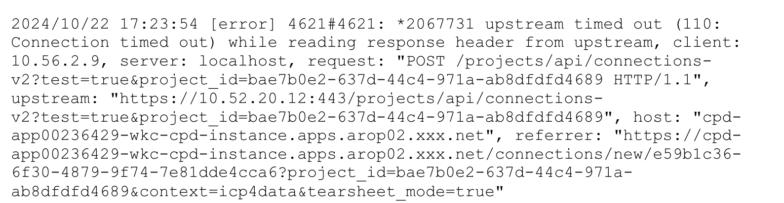
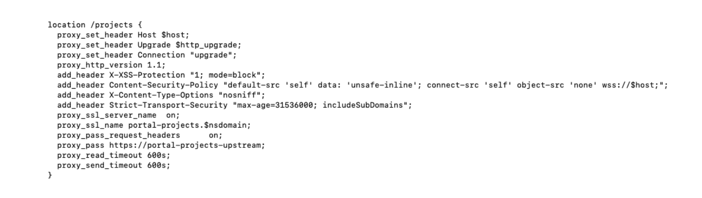

Increase time out setting for CPD API¶
1. Identify the zen-extension to be edited¶
- Go into the ibm-ngix pod
oc rsh ibm-nginx-xxx
- Go to the nginx folder
proxy_read_timeout
proxy_send_timeout
- Identify the zen-extension to be edited using grep
Grep the zen-extension using the keyword of the API call.
For example, we can infer the “project” as the keyword from below time out error message:

Use the keyword “project” for searching the zen-extension.
grep project ./*./cpd_ws-base-zen-frontdoor-extension_ie_159.conf
From the result, we can tell ws-base-zen-frontdoor-extension is the zen-extension we should edit.
2. Put the relevant custom resource into maintenance mode¶
As the ws-base-zen-frontdoor-extension zen-extension belongs to CCS, we need to put CCS into maintenance mode for preventing it from being reverted back during the reconciliation.
oc patch -n ${PROJECT_CPD_INST_OPERANDS} ccs ccs-cr --type merge --patch '{"spec": {"ignoreForMaintenance": true}}'
3. Add the section to the location part¶
-
Have a backup of the zen-extension ws-base-zen-frontdoor-extension
shell oc get zenextension ws-base-zen-frontdoor-extension -n ${PROJECT_CPD_INST_OPERANDS} -o yaml > ws-base-zen-frontdoor-extension.yaml -
Edit the zen-extension ws-base-zen-frontdoor-extension
shell oc edit zenextension ws-base-zen-frontdoor-extension -n ${PROJECT_CPD_INST_OPERANDS}
Add below time out settings to the location corresponding to the API call accordingly:
proxy_read_timeout 600s;
proxy_send_timeout 600s;
The edition looks like below:

Save the changes and wait for the zenextension to become the ‘Completed’ status.
oc get zenextension ws-base-zen-frontdoor-extension
NAME STATUS AGE
ws-base-zen-frontdoor-extension Completed 19d
4. Validate the changes applied¶
Follow similar approaches in Step 1 and check whether the time out setting in the location of the cpd_ws-base-zen-frontdoor-extension_ie_159.conf is with the changes made in previous steps.